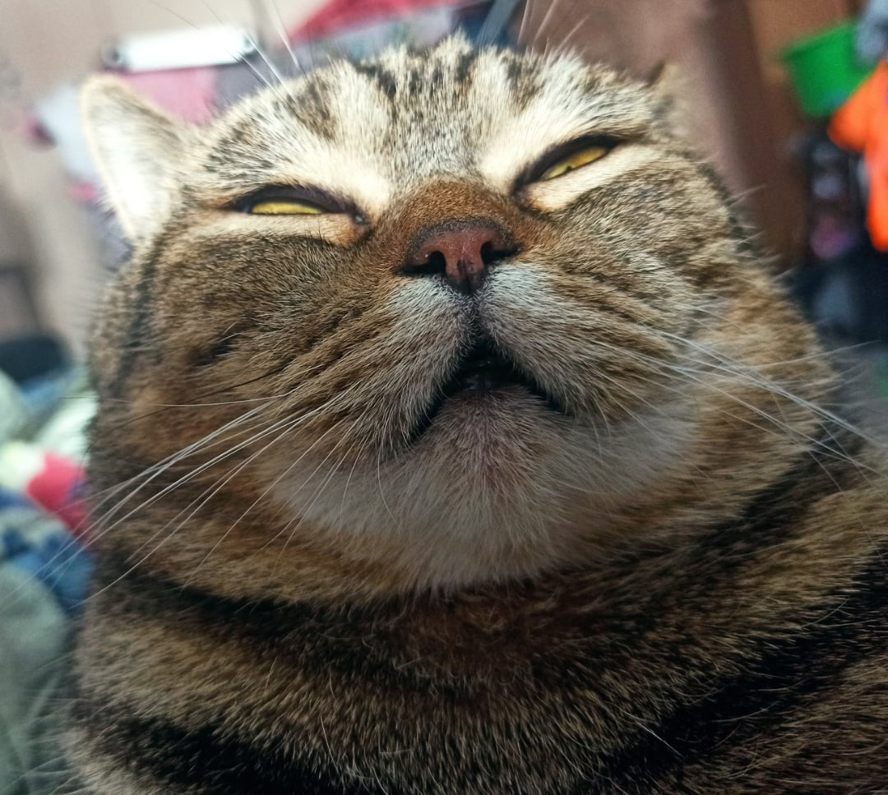
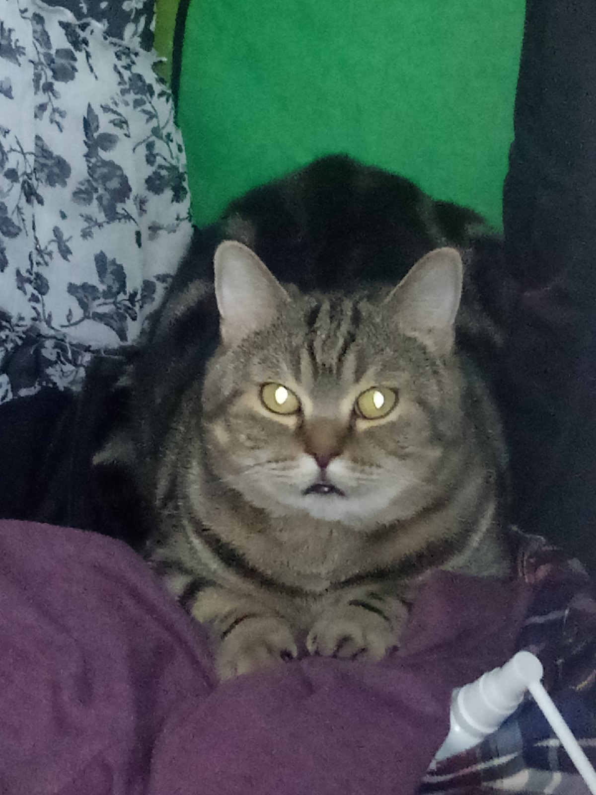
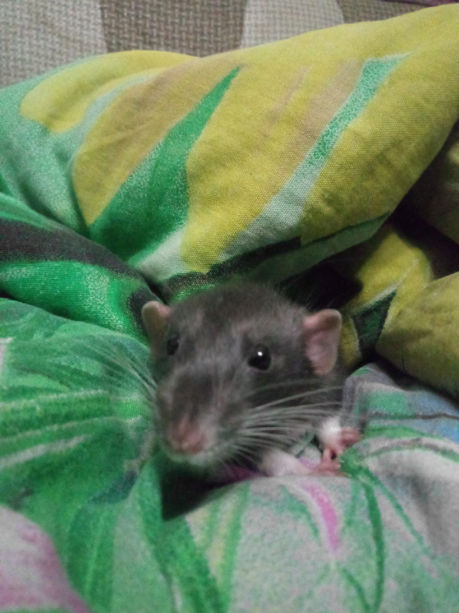
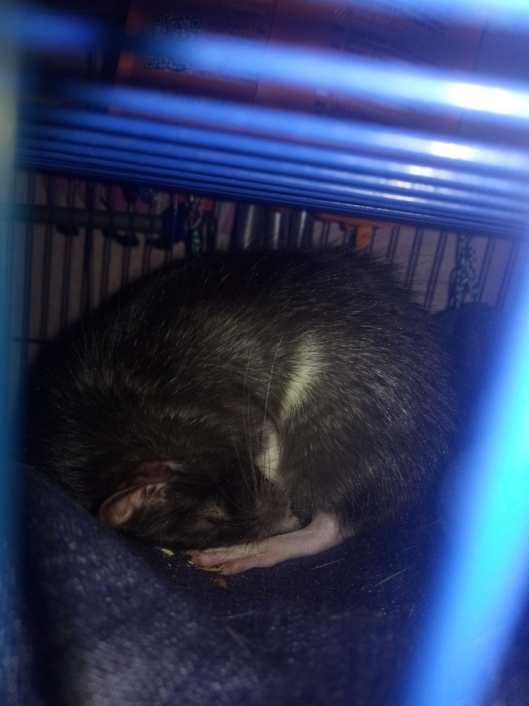
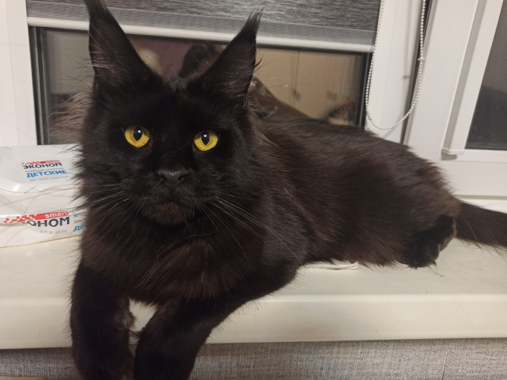
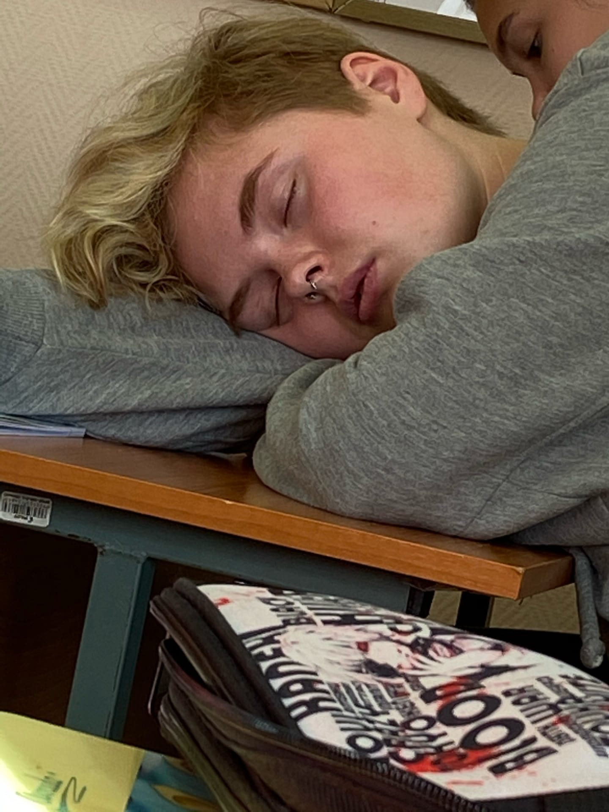

У меня есть 5 крыс, кот Гриня и кошка Алиса.
    Я всегда спала на парах на первом курсе.
Я закончила 9 классов в школе №14 в городе Каменск-уральский.
Ссылка на сайт школыСейчас я учусь на третьем курсе в ЕКТС.
В Fortnite я собрала уже большую коллекцию скинов..
Играю в такие режимы как:.
В режиме "Сражение с бурей" у меня очень много легендарных, мифических и эпических чертежей. Иногда захожу в миссию к началным уровням и делюсь с ними оружием прокаченным на 5 звёзд. В этом режиме дают достаточно много опыта боевого пропуска сезона.
В режиме "Коровская битва" я в основном играю дуо, либо в одиночном сражении. Режим "Нулева высота" - это та же самая Королевская битва, только без строительства. В "Творческом режиме" я играю на авторских картах для тренировки строительсва и меткости на новом оружии, а так же там много размлекательных карт, в этом режиме, как и в "Сражении с бурей" можно достаточно быстро заработать много опыта боевого пропуска.
Ссылка на расписание